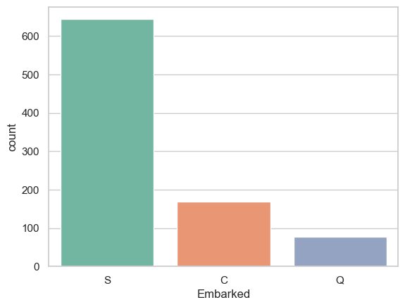

타이타닉 v2
타이타닉 v2
::: {#cell-1 .cell _cell_guid=‘de05512e-6991-44df-9599-da92a7e459ac’ _uuid=‘d8bdd5f0320e244e4702ed8ec1c2482b022c51cd’ execution_count=1}
import numpy as np
import pandas as pd
import matplotlib.pyplot as plt
plt.rc("font", size=14)
import seaborn as sns
sns.set(style="white")
sns.set(style="whitegrid", color_codes=True)
import warnings
warnings.simplefilter(action='ignore'):::
::: {#cell-2 .cell _cell_guid=‘e0a17223-f682-45fc-89a5-667af9782bbe’ _uuid=‘7964157913fbcff581fc1929eed487708e81ac9c’ execution_count=2}
train_df = pd.read_csv("data/titanic_train.csv")
test_df = pd.read_csv("data/titanic_test.csv")
train_df.head()| PassengerId | Survived | Pclass | Name | Sex | Age | SibSp | Parch | Ticket | Fare | Cabin | Embarked | |
|---|---|---|---|---|---|---|---|---|---|---|---|---|
| 0 | 1 | 0 | 3 | Braund, Mr. Owen Harris | male | 22.0 | 1 | 0 | A/5 21171 | 7.2500 | NaN | S |
| 1 | 2 | 1 | 1 | Cumings, Mrs. John Bradley (Florence Briggs Th... | female | 38.0 | 1 | 0 | PC 17599 | 71.2833 | C85 | C |
| 2 | 3 | 1 | 3 | Heikkinen, Miss. Laina | female | 26.0 | 0 | 0 | STON/O2. 3101282 | 7.9250 | NaN | S |
| 3 | 4 | 1 | 1 | Futrelle, Mrs. Jacques Heath (Lily May Peel) | female | 35.0 | 1 | 0 | 113803 | 53.1000 | C123 | S |
| 4 | 5 | 0 | 3 | Allen, Mr. William Henry | male | 35.0 | 0 | 0 | 373450 | 8.0500 | NaN | S |
:::
::: {#cell-3 .cell _cell_guid=‘1d969b76-ea88-4d32-a58e-f22a070258bf’ _uuid=‘bff38fcf31baf67493513c06f0c2f6e50576ff09’ execution_count=3}
test_df.head()| PassengerId | Pclass | Name | Sex | Age | SibSp | Parch | Ticket | Fare | Cabin | Embarked | |
|---|---|---|---|---|---|---|---|---|---|---|---|
| 0 | 892 | 3 | Kelly, Mr. James | male | 34.5 | 0 | 0 | 330911 | 7.8292 | NaN | Q |
| 1 | 893 | 3 | Wilkes, Mrs. James (Ellen Needs) | female | 47.0 | 1 | 0 | 363272 | 7.0000 | NaN | S |
| 2 | 894 | 2 | Myles, Mr. Thomas Francis | male | 62.0 | 0 | 0 | 240276 | 9.6875 | NaN | Q |
| 3 | 895 | 3 | Wirz, Mr. Albert | male | 27.0 | 0 | 0 | 315154 | 8.6625 | NaN | S |
| 4 | 896 | 3 | Hirvonen, Mrs. Alexander (Helga E Lindqvist) | female | 22.0 | 1 | 1 | 3101298 | 12.2875 | NaN | S |
:::
::: {#cell-4 .cell _cell_guid=‘29dddd33-d995-4b0f-92ea-a361b368cc42’ _uuid=‘d4fe22ead7e187724ca6f3ba7ba0e6412ae0e874’ execution_count=4}
# check missing values in train data
train_df.isnull().sum()PassengerId 0
Survived 0
Pclass 0
Name 0
Sex 0
Age 177
SibSp 0
Parch 0
Ticket 0
Fare 0
Cabin 687
Embarked 2
dtype: int64:::
::: {#cell-5 .cell _cell_guid=‘6d65fcfa-52bf-45ab-b959-64a32c1c1976’ _uuid=‘c6fd60f15d5e803d4dffc89e782c6fbc72445a83’ execution_count=5}
ax = train_df["Age"].hist(bins=15, density=True, stacked=True, color='teal', alpha=0.6)
train_df["Age"].plot(kind='density', color='teal')
ax.set(xlabel='Age')
plt.xlim(-10,85)
plt.show():::
::: {#cell-6 .cell _cell_guid=‘1d70c27b-1e4d-4d5e-8a39-c134389d436c’ _uuid=‘4f13840d4f9bf1b4331523c99274aa0627485e6c’ execution_count=6}
# mean age
print('The mean of "Age" is %.2f' %(train_df["Age"].mean(skipna=True)))
# median age
print('The median of "Age" is %.2f' %(train_df["Age"].median(skipna=True)))The mean of "Age" is 29.70
The median of "Age" is 28.00:::
::: {#cell-7 .cell _cell_guid=‘1a1ad808-0a63-43ac-b757-71195880ed4f’ _uuid=‘1acbce9c6bc5d586dda3e47b7506067a85524e66’ execution_count=7}
# percent of missing "Cabin"
print('Percent of missing "Cabin" records is %.2f%%' %((train_df['Cabin'].isnull().sum()/train_df.shape[0])*100))Percent of missing "Cabin" records is 77.10%:::
::: {#cell-8 .cell _cell_guid=‘f21c2b55-2126-439d-8b1d-e96dafc97d81’ _uuid=‘92ab9e62fb62f2a0fb9972baf6ada444187540e6’ execution_count=8}
# percent of missing "Embarked"
print('Percent of missing "Embarked" records is %.2f%%' %((train_df['Embarked'].isnull().sum()/train_df.shape[0])*100))Percent of missing "Embarked" records is 0.22%:::
::: {#cell-9 .cell _cell_guid=‘22924bc4-5dfa-4df7-b0d0-de3ede9c58b7’ _uuid=‘f2a915f45264f8a580de6cc382d96b370eb75730’ execution_count=9}
print('Boarded passengers grouped by port of embarkation (C = Cherbourg, Q = Queenstown, S = Southampton):')
print(train_df['Embarked'].value_counts())
sns.countplot(x='Embarked', data=train_df, palette='Set2')
plt.show()Boarded passengers grouped by port of embarkation (C = Cherbourg, Q = Queenstown, S = Southampton):
Embarked
S 644
C 168
Q 77
Name: count, dtype: int64
:::
::: {#cell-10 .cell _cell_guid=‘def67427-3257-4dce-872e-7f5b4202d18a’ _uuid=‘c57a9f8a54efa382bc94b695c9664330d01709ea’ execution_count=10}
print('The most common boarding port of embarkation is %s.' %train_df['Embarked'].value_counts().idxmax())The most common boarding port of embarkation is S.:::
::: {#cell-11 .cell _cell_guid=‘bc0d7121-1008-4890-9043-07eba1524e15’ _uuid=‘feeed4b6775f88edf5de12b0ee6ee73c16eba61d’ execution_count=11}
train_data = train_df.copy()
train_data["Age"].fillna(train_df["Age"].median(skipna=True), inplace=True)
train_data["Embarked"].fillna(train_df['Embarked'].value_counts().idxmax(), inplace=True)
train_data.drop('Cabin', axis=1, inplace=True):::
::: {#cell-12 .cell _cell_guid=‘0cfe1c08-71a6-493e-803d-db255af01697’ _uuid=‘d6be29651bb903964e02d3a7bcc7033513eb76c9’ execution_count=12}
# check missing values in adjusted train data
train_data.isnull().sum()PassengerId 0
Survived 0
Pclass 0
Name 0
Sex 0
Age 0
SibSp 0
Parch 0
Ticket 0
Fare 0
Embarked 0
dtype: int64:::
::: {#cell-13 .cell _cell_guid=‘10dcfe1b-34f1-4bd8-b937-5ae8daf4a378’ _uuid=‘3ee37b1151416aeeec8ebd7b94bb0184aabc57cd’ execution_count=13}
# preview adjusted train data
train_data.head()| PassengerId | Survived | Pclass | Name | Sex | Age | SibSp | Parch | Ticket | Fare | Embarked | |
|---|---|---|---|---|---|---|---|---|---|---|---|
| 0 | 1 | 0 | 3 | Braund, Mr. Owen Harris | male | 22.0 | 1 | 0 | A/5 21171 | 7.2500 | S |
| 1 | 2 | 1 | 1 | Cumings, Mrs. John Bradley (Florence Briggs Th... | female | 38.0 | 1 | 0 | PC 17599 | 71.2833 | C |
| 2 | 3 | 1 | 3 | Heikkinen, Miss. Laina | female | 26.0 | 0 | 0 | STON/O2. 3101282 | 7.9250 | S |
| 3 | 4 | 1 | 1 | Futrelle, Mrs. Jacques Heath (Lily May Peel) | female | 35.0 | 1 | 0 | 113803 | 53.1000 | S |
| 4 | 5 | 0 | 3 | Allen, Mr. William Henry | male | 35.0 | 0 | 0 | 373450 | 8.0500 | S |
:::
::: {#cell-14 .cell _cell_guid=‘dda26046-b93b-49ee-a52e-35355ecb425c’ _uuid=‘293aec20df86ef529d10ae1f051dfe921ba07b88’ execution_count=14}
plt.figure(figsize=(15,8))
ax = train_df["Age"].hist(bins=15, density=True, stacked=True, color='teal', alpha=0.6)
train_df["Age"].plot(kind='density', color='teal')
ax = train_data["Age"].hist(bins=15, density=True, stacked=True, color='orange', alpha=0.5)
train_data["Age"].plot(kind='density', color='orange')
ax.legend(['Raw Age', 'Adjusted Age'])
ax.set(xlabel='Age')
plt.xlim(-10,85)
plt.show():::
::: {#cell-15 .cell _cell_guid=‘759c3c8e-8db6-41d9-a1a2-058a15b338a6’ _uuid=‘d1f5815ba663f7e8cc17d7efcff73653af5b1bdb’ execution_count=15}
## Create categorical variable for traveling alone
train_data['TravelAlone']=np.where((train_data["SibSp"]+train_data["Parch"])>0, 0, 1)
train_data.drop('SibSp', axis=1, inplace=True)
train_data.drop('Parch', axis=1, inplace=True):::
::: {#cell-16 .cell _cell_guid=‘f95361e8-2533-4731-a7ab-a99cf686ed50’ _uuid=‘4494fcbf9faa90151e20042f74d73395fac3cc8e’ execution_count=16}
#create categorical variables and drop some variables
training=pd.get_dummies(train_data, columns=["Pclass","Embarked","Sex"])
training.drop('Sex_female', axis=1, inplace=True)
training.drop('PassengerId', axis=1, inplace=True)
training.drop('Name', axis=1, inplace=True)
training.drop('Ticket', axis=1, inplace=True)
final_train = training
final_train.head()| Survived | Age | Fare | TravelAlone | Pclass_1 | Pclass_2 | Pclass_3 | Embarked_C | Embarked_Q | Embarked_S | Sex_male | |
|---|---|---|---|---|---|---|---|---|---|---|---|
| 0 | 0 | 22.0 | 7.2500 | 0 | False | False | True | False | False | True | True |
| 1 | 1 | 38.0 | 71.2833 | 0 | True | False | False | True | False | False | False |
| 2 | 1 | 26.0 | 7.9250 | 1 | False | False | True | False | False | True | False |
| 3 | 1 | 35.0 | 53.1000 | 0 | True | False | False | False | False | True | False |
| 4 | 0 | 35.0 | 8.0500 | 1 | False | False | True | False | False | True | True |
:::
::: {#cell-17 .cell _cell_guid=‘501f9a53-881d-4440-9366-7aae67eb358b’ _uuid=‘d80416a026d17ccac3bf793408dd5f4f1e17bf63’ execution_count=17}
test_df.isnull().sum()PassengerId 0
Pclass 0
Name 0
Sex 0
Age 86
SibSp 0
Parch 0
Ticket 0
Fare 1
Cabin 327
Embarked 0
dtype: int64:::
::: {#cell-18 .cell _cell_guid=‘8b9ef076-3669-4339-8d10-0d8783a92e07’ _uuid=‘145675b90aa2befa533c640aaedd4bf8069b12d4’ execution_count=18}
test_data = test_df.copy()
test_data["Age"].fillna(train_df["Age"].median(skipna=True), inplace=True)
test_data["Fare"].fillna(train_df["Fare"].median(skipna=True), inplace=True)
test_data.drop('Cabin', axis=1, inplace=True)
test_data['TravelAlone']=np.where((test_data["SibSp"]+test_data["Parch"])>0, 0, 1)
test_data.drop('SibSp', axis=1, inplace=True)
test_data.drop('Parch', axis=1, inplace=True)
testing = pd.get_dummies(test_data, columns=["Pclass","Embarked","Sex"])
testing.drop('Sex_female', axis=1, inplace=True)
testing.drop('PassengerId', axis=1, inplace=True)
testing.drop('Name', axis=1, inplace=True)
testing.drop('Ticket', axis=1, inplace=True)
final_test = testing
final_test.head()| Age | Fare | TravelAlone | Pclass_1 | Pclass_2 | Pclass_3 | Embarked_C | Embarked_Q | Embarked_S | Sex_male | |
|---|---|---|---|---|---|---|---|---|---|---|
| 0 | 34.5 | 7.8292 | 1 | False | False | True | False | True | False | True |
| 1 | 47.0 | 7.0000 | 0 | False | False | True | False | False | True | False |
| 2 | 62.0 | 9.6875 | 1 | False | True | False | False | True | False | True |
| 3 | 27.0 | 8.6625 | 1 | False | False | True | False | False | True | True |
| 4 | 22.0 | 12.2875 | 0 | False | False | True | False | False | True | False |
:::
::: {#cell-19 .cell _cell_guid=‘9f9ca9e5-50a0-4487-ba53-815dda90af1c’ _uuid=‘790e8d7ca89d19e276b3398e299c42893a796b79’ execution_count=19}
plt.figure(figsize=(15,8))
ax = sns.kdeplot(final_train["Age"][final_train.Survived == 1], color="darkturquoise", shade=True)
sns.kdeplot(final_train["Age"][final_train.Survived == 0], color="lightcoral", shade=True)
plt.legend(['Survived', 'Died'])
plt.title('Density Plot of Age for Surviving Population and Deceased Population')
ax.set(xlabel='Age')
plt.xlim(-10,85)
plt.show():::
::: {#cell-20 .cell _cell_guid=‘d2aa9f59-c433-4258-b8db-225b63a5eab6’ _uuid=‘9cf1794d9db2fdc314c20ca97a76e9470e81a354’ execution_count=20}
plt.figure(figsize=(20,8))
avg_survival_byage = final_train[["Age", "Survived"]].groupby(['Age'], as_index=False).mean()
g = sns.barplot(x='Age', y='Survived', data=avg_survival_byage, color="LightSeaGreen")
plt.show():::
::: {#cell-21 .cell _cell_guid=‘1655b49b-b33f-4236-8b31-d995ef26c6f6’ _uuid=‘8918defa6e17b83c700ea45357ebd67a3a22f02f’ execution_count=22}
final_train['IsMinor']=np.where(final_train['Age']<=16, 1, 0)
final_test['IsMinor']=np.where(final_test['Age']<=16, 1, 0):::
::: {#cell-22 .cell _cell_guid=‘9f31ffe1-7cd8-4169-b193-ed44e56d0bd4’ _uuid=‘4a1c521f08460f6983eca0c4e01294fb7c86e4f9’ execution_count=23}
plt.figure(figsize=(15,8))
ax = sns.kdeplot(final_train["Fare"][final_train.Survived == 1], color="darkturquoise", shade=True)
sns.kdeplot(final_train["Fare"][final_train.Survived == 0], color="lightcoral", shade=True)
plt.legend(['Survived', 'Died'])
plt.title('Density Plot of Fare for Surviving Population and Deceased Population')
ax.set(xlabel='Fare')
plt.xlim(-20,200)
plt.show():::
::: {#cell-23 .cell _cell_guid=‘676548e8-6dd4-4180-800c-7b164acb3877’ _uuid=‘08fd677214959e0b938a0f8a94b63ab548673ea5’ execution_count=28}
sns.barplot(x='Pclass', y='Survived', data=train_df, color="darkturquoise")
plt.show():::
::: {#cell-24 .cell _cell_guid=‘6e5bec50-2f5e-433e-9130-c56956fddad3’ _uuid=‘a9f0598701c7c5224eaa73dafa869af73beffe18’ execution_count=29}
sns.barplot(x='Embarked', y='Survived', data=train_df, color="teal")
plt.show():::
::: {#cell-25 .cell _cell_guid=‘67017a88-93d4-412b-9adf-8b4d1d9b9db0’ _uuid=‘e0c3dc16292ef0bcabf0fc680d821ef654084ab4’ execution_count=30}
sns.barplot(x='TravelAlone', y='Survived', data=final_train, color="mediumturquoise")
plt.show():::
::: {#cell-26 .cell _cell_guid=‘7b416e59-8616-4a44-93e1-a8005eff78a9’ _uuid=‘354794315925dff1e96229cc737eaf299aaea17a’ execution_count=31}
sns.barplot(x='Sex', y='Survived', data=train_df, color="aquamarine")
plt.show():::
::: {#cell-27 .cell _cell_guid=‘11a2a468-20df-40cd-a4ba-4ae7bd2fc403’ _uuid=‘64befdf1182c2b4e845f488f5bfd0e19ce3dc17a’ execution_count=34}
from sklearn.linear_model import LogisticRegression
from sklearn.feature_selection import RFE
cols = ["Age","Fare","TravelAlone","Pclass_1","Pclass_2","Embarked_C","Embarked_S","Sex_male","IsMinor"]
X = final_train[cols]
y = final_train['Survived']
# Build a logreg and compute the feature importances
model = LogisticRegression()
# create the RFE model and select 8 attributes
rfe = RFE(model)
rfe = rfe.fit(X, y)
# summarize the selection of the attributes
print('Selected features: %s' % list(X.columns[rfe.support_]))Selected features: ['Pclass_1', 'Pclass_2', 'Sex_male', 'IsMinor']:::
::: {#cell-28 .cell _cell_guid=‘7239aa6f-7fd2-4b75-a387-f6624f1c338c’ _uuid=‘53d79f38cfe33d75d6ff869a443b9a29c93b4cbd’ execution_count=41}
from sklearn.feature_selection import RFECV
# Create the RFE object and compute a cross-validated score.
# The "accuracy" scoring is proportional to the number of correct classifications
rfecv = RFECV(estimator=LogisticRegression(), step=1, cv=10, scoring='accuracy')
rfecv.fit(X, y)
print("Optimal number of features: %d" % rfecv.n_features_)
print('Selected features: %s' % list(X.columns[rfecv.support_]))
# Plot number of features VS. cross-validation scores
plt.figure(figsize=(10,6))
plt.xlabel("Number of features selected")
plt.ylabel("Cross validation score (nb of correct classifications)")
plt.plot(range(1, len(rfecv.cv_results_) + 1), rfecv.cv_results_.keys())
plt.show()Optimal number of features: 9
Selected features: ['Age', 'Fare', 'TravelAlone', 'Pclass_1', 'Pclass_2', 'Embarked_C', 'Embarked_S', 'Sex_male', 'IsMinor']:::
::: {#cell-29 .cell _cell_guid=‘08986ec4-79ff-466b-b763-61bf84a0879b’ _uuid=‘3f6950a7c24c629b72e17e54c556f3c183b3f779’ execution_count=42}
Selected_features = ['Age', 'TravelAlone', 'Pclass_1', 'Pclass_2', 'Embarked_C',
'Embarked_S', 'Sex_male', 'IsMinor']
X = final_train[Selected_features]
plt.subplots(figsize=(8, 5))
sns.heatmap(X.corr(), annot=True, cmap="RdYlGn")
plt.show():::
::: {#cell-30 .cell _cell_guid=‘84233f59-f3c7-4ea0-884d-96f8ad4d5b10’ _uuid=‘46336228eeb864bc82e6739768122579d1c9634c’ execution_count=44}
from sklearn.model_selection import train_test_split, cross_val_score
from sklearn.metrics import accuracy_score, classification_report, precision_score, recall_score
from sklearn.metrics import confusion_matrix, precision_recall_curve, roc_curve, auc, log_loss
# create X (features) and y (response)
X = final_train[Selected_features]
y = final_train['Survived']
# use train/test split with different random_state values
# we can change the random_state values that changes the accuracy scores
# the scores change a lot, this is why testing scores is a high-variance estimate
X_train, X_test, y_train, y_test = train_test_split(X, y, test_size=0.2, random_state=2)
# check classification scores of logistic regression
logreg = LogisticRegression()
logreg.fit(X_train, y_train)
y_pred = logreg.predict(X_test)
y_pred_proba = logreg.predict_proba(X_test)[:, 1]
[fpr, tpr, thr] = roc_curve(y_test, y_pred_proba)
print('Train/Test split results:')
print(logreg.__class__.__name__+" accuracy is %2.3f" % accuracy_score(y_test, y_pred))
print(logreg.__class__.__name__+" log_loss is %2.3f" % log_loss(y_test, y_pred_proba))
print(logreg.__class__.__name__+" auc is %2.3f" % auc(fpr, tpr))
idx = np.min(np.where(tpr > 0.95)) # index of the first threshold for which the sensibility > 0.95
plt.figure()
plt.plot(fpr, tpr, color='coral', label='ROC curve (area = %0.3f)' % auc(fpr, tpr))
plt.plot([0, 1], [0, 1], 'k--')
plt.plot([0,fpr[idx]], [tpr[idx],tpr[idx]], 'k--', color='blue')
plt.plot([fpr[idx],fpr[idx]], [0,tpr[idx]], 'k--', color='blue')
plt.xlim([0.0, 1.0])
plt.ylim([0.0, 1.05])
plt.xlabel('False Positive Rate (1 - specificity)', fontsize=14)
plt.ylabel('True Positive Rate (recall)', fontsize=14)
plt.title('Receiver operating characteristic (ROC) curve')
plt.legend(loc="lower right")
plt.show()
print("Using a threshold of %.3f " % thr[idx] + "guarantees a sensitivity of %.3f " % tpr[idx] +
"and a specificity of %.3f" % (1-fpr[idx]) +
", i.e. a false positive rate of %.2f%%." % (np.array(fpr[idx])*100))Train/Test split results:
LogisticRegression accuracy is 0.782
LogisticRegression log_loss is 0.504
LogisticRegression auc is 0.838
Using a threshold of 0.070 guarantees a sensitivity of 0.962 and a specificity of 0.200, i.e. a false positive rate of 80.00%.:::
::: {#cell-31 .cell _cell_guid=‘32a611ae-b2b7-43e0-8fa8-3cc56e351bf6’ _uuid=‘7f0aba7b861c3fa1748060b4733778851fb00a31’ execution_count=45}
# 10-fold cross-validation logistic regression
logreg = LogisticRegression()
# Use cross_val_score function
# We are passing the entirety of X and y, not X_train or y_train, it takes care of splitting the data
# cv=10 for 10 folds
# scoring = {'accuracy', 'neg_log_loss', 'roc_auc'} for evaluation metric - althought they are many
scores_accuracy = cross_val_score(logreg, X, y, cv=10, scoring='accuracy')
scores_log_loss = cross_val_score(logreg, X, y, cv=10, scoring='neg_log_loss')
scores_auc = cross_val_score(logreg, X, y, cv=10, scoring='roc_auc')
print('K-fold cross-validation results:')
print(logreg.__class__.__name__+" average accuracy is %2.3f" % scores_accuracy.mean())
print(logreg.__class__.__name__+" average log_loss is %2.3f" % -scores_log_loss.mean())
print(logreg.__class__.__name__+" average auc is %2.3f" % scores_auc.mean())K-fold cross-validation results:
LogisticRegression average accuracy is 0.796
LogisticRegression average log_loss is 0.454
LogisticRegression average auc is 0.850:::
::: {#cell-32 .cell _cell_guid=‘9ea95aac-00b2-413e-ab86-c6b8782c40ef’ _uuid=‘90840c89d42e9284c9480a256dc259778c3a5b1b’ execution_count=46}
from sklearn.model_selection import cross_validate
scoring = {'accuracy': 'accuracy', 'log_loss': 'neg_log_loss', 'auc': 'roc_auc'}
modelCV = LogisticRegression()
results = cross_validate(modelCV, X, y, cv=10, scoring=list(scoring.values()),
return_train_score=False)
print('K-fold cross-validation results:')
for sc in range(len(scoring)):
print(modelCV.__class__.__name__+" average %s: %.3f (+/-%.3f)" % (list(scoring.keys())[sc], -results['test_%s' % list(scoring.values())[sc]].mean()
if list(scoring.values())[sc]=='neg_log_loss'
else results['test_%s' % list(scoring.values())[sc]].mean(),
results['test_%s' % list(scoring.values())[sc]].std()))K-fold cross-validation results:
LogisticRegression average accuracy: 0.796 (+/-0.024)
LogisticRegression average log_loss: 0.454 (+/-0.037)
LogisticRegression average auc: 0.850 (+/-0.028):::
::: {#cell-33 .cell _cell_guid=‘80b5d5c3-ead3-48f7-84eb-42c801e0370a’ _uuid=‘0fdf4a257a49b0b47552a4ed307c86852c4ed271’ execution_count=47}
cols = ["Age","Fare","TravelAlone","Pclass_1","Pclass_2","Embarked_C","Embarked_S","Sex_male","IsMinor"]
X = final_train[cols]
scoring = {'accuracy': 'accuracy', 'log_loss': 'neg_log_loss', 'auc': 'roc_auc'}
modelCV = LogisticRegression()
results = cross_validate(modelCV, final_train[cols], y, cv=10, scoring=list(scoring.values()),
return_train_score=False)
print('K-fold cross-validation results:')
for sc in range(len(scoring)):
print(modelCV.__class__.__name__+" average %s: %.3f (+/-%.3f)" % (list(scoring.keys())[sc], -results['test_%s' % list(scoring.values())[sc]].mean()
if list(scoring.values())[sc]=='neg_log_loss'
else results['test_%s' % list(scoring.values())[sc]].mean(),
results['test_%s' % list(scoring.values())[sc]].std()))K-fold cross-validation results:
LogisticRegression average accuracy: 0.797 (+/-0.028)
LogisticRegression average log_loss: 0.455 (+/-0.037)
LogisticRegression average auc: 0.849 (+/-0.028):::
::: {#cell-34 .cell _cell_guid=‘4a39cb49-b446-4ffa-88a2-e37b627eb5e5’ _uuid=‘765695a9712d3fe1ecff10f17dcc077a80ed7682’ execution_count=48}
from sklearn.model_selection import GridSearchCV
X = final_train[Selected_features]
param_grid = {'C': np.arange(1e-05, 3, 0.1)}
scoring = {'Accuracy': 'accuracy', 'AUC': 'roc_auc', 'Log_loss': 'neg_log_loss'}
gs = GridSearchCV(LogisticRegression(), return_train_score=True,
param_grid=param_grid, scoring=scoring, cv=10, refit='Accuracy')
gs.fit(X, y)
results = gs.cv_results_
print('='*20)
print("best params: " + str(gs.best_estimator_))
print("best params: " + str(gs.best_params_))
print('best score:', gs.best_score_)
print('='*20)
plt.figure(figsize=(10, 10))
plt.title("GridSearchCV evaluating using multiple scorers simultaneously",fontsize=16)
plt.xlabel("Inverse of regularization strength: C")
plt.ylabel("Score")
plt.grid()
ax = plt.axes()
ax.set_xlim(0, param_grid['C'].max())
ax.set_ylim(0.35, 0.95)
# Get the regular numpy array from the MaskedArray
X_axis = np.array(results['param_C'].data, dtype=float)
for scorer, color in zip(list(scoring.keys()), ['g', 'k', 'b']):
for sample, style in (('train', '--'), ('test', '-')):
sample_score_mean = -results['mean_%s_%s' % (sample, scorer)] if scoring[scorer]=='neg_log_loss' else results['mean_%s_%s' % (sample, scorer)]
sample_score_std = results['std_%s_%s' % (sample, scorer)]
ax.fill_between(X_axis, sample_score_mean - sample_score_std,
sample_score_mean + sample_score_std,
alpha=0.1 if sample == 'test' else 0, color=color)
ax.plot(X_axis, sample_score_mean, style, color=color,
alpha=1 if sample == 'test' else 0.7,
label="%s (%s)" % (scorer, sample))
best_index = np.nonzero(results['rank_test_%s' % scorer] == 1)[0][0]
best_score = -results['mean_test_%s' % scorer][best_index] if scoring[scorer]=='neg_log_loss' else results['mean_test_%s' % scorer][best_index]
# Plot a dotted vertical line at the best score for that scorer marked by x
ax.plot([X_axis[best_index], ] * 2, [0, best_score],
linestyle='-.', color=color, marker='x', markeredgewidth=3, ms=8)
# Annotate the best score for that scorer
ax.annotate("%0.2f" % best_score,
(X_axis[best_index], best_score + 0.005))
plt.legend(loc="best")
plt.grid('off')
plt.show()====================
best params: LogisticRegression(C=2.4000100000000004)
best params: {'C': 2.4000100000000004}
best score: 0.8069662921348316
====================:::
::: {#cell-35 .cell _cell_guid=‘a777c645-7413-4e1d-855a-0b416be1b48e’ _uuid=‘514d0e3aabe57aaad38d10d6101dbdac5af89ca4’ execution_count=49}
from sklearn.preprocessing import StandardScaler
from sklearn.model_selection import RepeatedStratifiedKFold
from sklearn.pipeline import Pipeline
#Define simple model
###############################################################################
C = np.arange(1e-05, 5.5, 0.1)
scoring = {'Accuracy': 'accuracy', 'AUC': 'roc_auc', 'Log_loss': 'neg_log_loss'}
log_reg = LogisticRegression()
#Simple pre-processing estimators
###############################################################################
std_scale = StandardScaler(with_mean=False, with_std=False)
#std_scale = StandardScaler()
#Defining the CV method: Using the Repeated Stratified K Fold
###############################################################################
n_folds=5
n_repeats=5
rskfold = RepeatedStratifiedKFold(n_splits=n_folds, n_repeats=n_repeats, random_state=2)
#Creating simple pipeline and defining the gridsearch
###############################################################################
log_clf_pipe = Pipeline(steps=[('scale',std_scale), ('clf',log_reg)])
log_clf = GridSearchCV(estimator=log_clf_pipe, cv=rskfold,
scoring=scoring, return_train_score=True,
param_grid=dict(clf__C=C), refit='Accuracy')
log_clf.fit(X, y)
results = log_clf.cv_results_
print('='*20)
print("best params: " + str(log_clf.best_estimator_))
print("best params: " + str(log_clf.best_params_))
print('best score:', log_clf.best_score_)
print('='*20)
plt.figure(figsize=(10, 10))
plt.title("GridSearchCV evaluating using multiple scorers simultaneously",fontsize=16)
plt.xlabel("Inverse of regularization strength: C")
plt.ylabel("Score")
plt.grid()
ax = plt.axes()
ax.set_xlim(0, C.max())
ax.set_ylim(0.35, 0.95)
# Get the regular numpy array from the MaskedArray
X_axis = np.array(results['param_clf__C'].data, dtype=float)
for scorer, color in zip(list(scoring.keys()), ['g', 'k', 'b']):
for sample, style in (('train', '--'), ('test', '-')):
sample_score_mean = -results['mean_%s_%s' % (sample, scorer)] if scoring[scorer]=='neg_log_loss' else results['mean_%s_%s' % (sample, scorer)]
sample_score_std = results['std_%s_%s' % (sample, scorer)]
ax.fill_between(X_axis, sample_score_mean - sample_score_std,
sample_score_mean + sample_score_std,
alpha=0.1 if sample == 'test' else 0, color=color)
ax.plot(X_axis, sample_score_mean, style, color=color,
alpha=1 if sample == 'test' else 0.7,
label="%s (%s)" % (scorer, sample))
best_index = np.nonzero(results['rank_test_%s' % scorer] == 1)[0][0]
best_score = -results['mean_test_%s' % scorer][best_index] if scoring[scorer]=='neg_log_loss' else results['mean_test_%s' % scorer][best_index]
# Plot a dotted vertical line at the best score for that scorer marked by x
ax.plot([X_axis[best_index], ] * 2, [0, best_score],
linestyle='-.', color=color, marker='x', markeredgewidth=3, ms=8)
# Annotate the best score for that scorer
ax.annotate("%0.2f" % best_score,
(X_axis[best_index], best_score + 0.005))
plt.legend(loc="best")
plt.grid('off')
plt.show()====================
best params: Pipeline(steps=[('scale', StandardScaler(with_mean=False, with_std=False)),
('clf', LogisticRegression(C=4.10001))])
best params: {'clf__C': 4.10001}
best score: 0.7995505617977527
====================:::
::: {#cell-36 .cell _cell_guid=‘e52c3bfb-4325-4c27-9f8e-5514dae799c2’ _uuid=‘b3d12ca129d816d2434e74ed6574f829f826c3fc’ execution_count=50}
# final_test['Survived'] = log_clf.predict(final_test[Selected_features])
# final_test['PassengerId'] = test_df['PassengerId']
# submission = final_test[['PassengerId','Survived']]
# submission.to_csv("submission.csv", index=False)
# submission.tail()| PassengerId | Survived | |
|---|---|---|
| 413 | 1305 | 0 |
| 414 | 1306 | 1 |
| 415 | 1307 | 0 |
| 416 | 1308 | 0 |
| 417 | 1309 | 0 |
:::